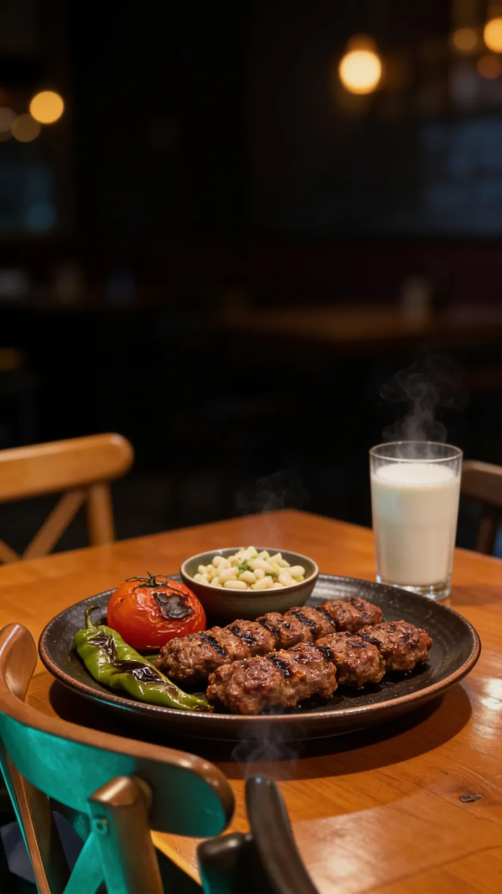
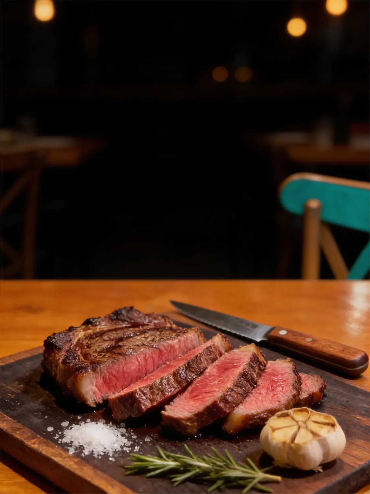

Başlangıçlar

Dana Carpaccio
1.100 ₺İnce dövülmüş dana eti, çeri domates, roka ve parmesan.
Rosespierre
1.100 ₺120 gr · İnce dövülmüş dana, ızgarada mühürlenir; roka ve parmesanla.
Sıcak Füme
960 ₺Sıcak servis edilen dana füme, roka ve parmesan.
İsli Et
950 ₺Kendi yapımımız Boşnak usulü kuru et, roka ve çeri domates.
Zengin Peynir Tabağı
930 ₺Yöresel peynir çeşitleri ve kuru et.
Dana Füme Et
900 ₺Roka, parmesan ve balzamik sos.
Peynir Tabağı
760 ₺Dilim Ezine koyun peyniri ile+160 ₺İlik
650 ₺Taze dana iliği ızgarada mühürlenir, kemiğinde gelir. İsterseniz bol tereyağlı sıcak tavada.
Patates Kızartması
350 ₺Baharatlı.
Çorba
Günün Çorbası
140 ₺Bugün ne piştiğini garsona sorun.
Salatalar
Steak Salata
700 ₺Kuşbaşı dana, Akdeniz yeşillikleri, domates, mısır, sızma zeytinyağı.
Izgara Hellim Salata
680 ₺Akdeniz yeşillikleri, dilim zeytin, kapari çiçeği, ızgara hellim.
Chicken Salata
600 ₺Soslu tavuk parçaları, Akdeniz yeşillikleri, salatalık, sızma zeytinyağı.
Ton Balıklı Salata
560 ₺Akdeniz yeşillikleri, dilim zeytin, kapari çiçeği, ton balığı.
Tulum Peynirli Salata
550 ₺Akdeniz yeşillikleri, çeri domates, tulum peyniri, nar, mısır, ceviz.
Bahçe Salata
450 ₺Akdeniz yeşillikleri, domates, mısır, salatalık, sızma zeytinyağı.
Roka Salatası
450 ₺Soğan, domates, parmesan, sızma zeytinyağı.
Çoban Salata
450 ₺Domates, salatalık, soğan, biber, maydanoz.
Köfteler ve Adanalar

Şevket Köfte
600 ₺200 gr · Patates kızartmasıyla.
Şevket Mangal Sucuk
580 ₺200 gr · Patates kızartmasıyla.
Kaşarlı Köfte
650 ₺250 gr · Patates kızartmasıyla.
Kalkan Köfte
1.100 ₺500 gr · Paylaşmalık büyük köfte, patates kızartmasıyla.
Adana-Urfa
900 ₺Zırhta çekilmiş dana ve kuzu eti; lavaş, domates, biber ve soğanla.
Özel Yapım Dana Sosis
800 ₺Patates kızartmasıyla.
Burgerler
Hepsi cheddar, özel sos ve patates kızartmasıyla gelir.

Şevket Burger
730 ₺200 gr · Dana füme ile.
120 gr610 ₺Lokum Burger
900 ₺120 gr · Dana lokum ile.
Mushroom Burger
680 ₺130 gr · Taze toplanmış köy mantarı ile.
Sucuk Burger
680 ₺120 gr · Şevk-Et kasap sucuğu ile.
Mini Burger
550 ₺70 gr
Steakler
Özel ıspanaklı mantar sosu ve fırın patatesle. Garnitürler mevsime göre değişir.

Ottoman Steak
3.900 ₺750–800 gr
Porterhouse Steak
3.400 ₺600–650 gr
T-bone Steak
2.900 ₺450–500 gr
Dallas Steak
2.900 ₺450–500 gr
Dana Pirzola
2.450 ₺350–400 gr
Newyork Steak
2.200 ₺300 gr
Şevket Kobe
2.200 ₺200 gr
Kırmızı Etler

Şevket Special
2.500 ₺350 gr · Dana lokum, sıcak tavada bol tereyağıyla. İki kişilik.
Dört kişilik, 720 gr4.900 ₺Dana Lokum
1.300 ₺200 gr · Bonfilenin tam ortasından; ıspanaklı mantar sosu, fırın patates.
Fillet Mignon
1.300 ₺200 gr · Kalın kesim bonfile; ıspanaklı mantar sosu, fırın patates.
Dana Antrikot
1.300 ₺220 gr · Ispanaklı mantar sosu ve fırın patatesle.
Dana Şaşlık
1.300 ₺250 gr · Dana bonfile, özel kremalı sos; sıcak tavada cheddar ile.
Şevket Spagetti
1.200 ₺200 gr · Ispanaklı mantar sote ve fırın patatesle.
Kuzular
Garnitürler mevsime göre değişir.
Kuzu Kafes
3.990 ₺1.650 gr · Boy ve fiyat değişebilir; garsona sorun.
Kuzu Newyork
2.400 ₺400 gr · Özel ıspanaklı mantar sosu, fırın patates.
Kuzu Gerdan
2.400 ₺Fırın patates, ıspanaklı mantar sote, roka, domates.
Kuzu Küşleme
1.300 ₺200 gr · Özel ıspanaklı mantar sosu, fırın patates.
Kuzu Lokum
1.300 ₺200 gr · Özel ıspanaklı mantar sosu, fırın patates.
Kuzu Pirzola
1.280 ₺300–350 gr · Özel ıspanaklı mantar sosu, fırın patates.
Külbastı
1.050 ₺200 gr · Özel ıspanaklı mantar sosu, fırın patates.
Kuzu Şiş
1.050 ₺200 gr · Özel ıspanaklı mantar sosu, fırın patates.
Ciğer Şiş
900 ₺Lavaş, domates, biber, soğan.
Fajitalar
Sıcak, lavaşla servis edilir.
Steak Fajita
800 ₺İnce doğranmış bonfile, çeri domates, roka, biber.
Chicken Fajita
700 ₺İnce dövülmüş tavuk, çeri domates, roka, biber.
Beyaz Etler
Yaprak Kanat
550 ₺Patates kızartması eşliğinde.
Piliç İncik
550 ₺Patates kızartması eşliğinde.
İçecekler
Soğuk içecekler.
Ev Yapımı Limonata
170 ₺Coca Cola
140 ₺Fanta
140 ₺Meyve Suyu
120 ₺Ayran
100 ₺Soğuk Çay
95 ₺Şalgam
85 ₺